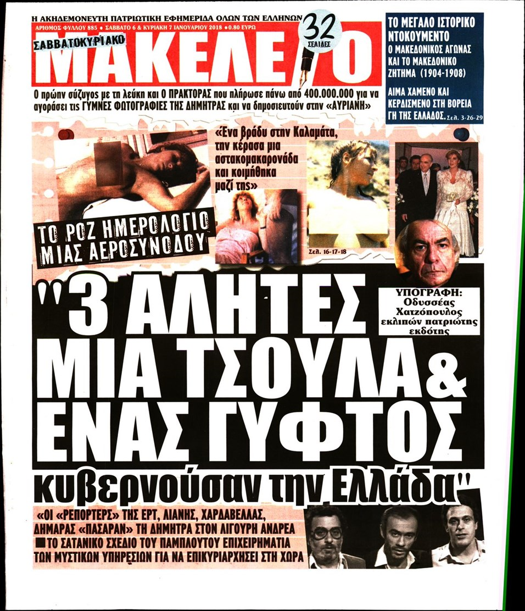
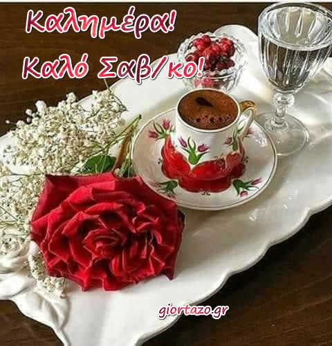

LIFE | HuffPost Greece
 Ελλάδα (Greece) Έκδοση ΚΟΡΟΝΟΪΟΣ ΠΟΛΙΤΙΚΗ ΚΟΙΝΩΝΙΑ Αστυνομικό Κλιματική Αλλαγή Ανακύκλωση Καιρός ΟΙΚΟΝΟΜΙΑ Ενέργεια Τουρισμός Επιχειρήσεις ΚΟΣΜΟΣ Ευρώπη Αμερική Ασία Αφρική Αυστραλία Παράξενος Κόσμος Διασημότητες 22ος ΑΙΩΝΑΣ Τεχνολογία Επιστήμη Διάστημα Καινοτομία ΠΟΛΙΤΙΣΜΟΣ Θέατρο Σινεμά Μουσική Βιβλίο Χορός Εικαστικά Μουσεία Τηλεόραση LIFE Πόλη Ευεξία Σχέσεις Γονείς Γεύση Στυλ Ταξίδι Προτάσεις ΑΠΟΨΗ VIDEO ΑΚΟΛΟΥΘΗΣΤΕ ΜΑΣ Όροι χρήσης | Απόρρητο Μέρος του HuffPost News. ©2021 BuzzFeed, Inc. Ολα τα δικαιώματα διατηρούνται. ΚΟΡΟΝΟΪΟΣ ΠΟΛΙΤΙΚΗ ΚΟΙΝΩΝΙΑ ΟΙΚΟΝΟΜΙΑ ΚΟΣΜΟΣ ΠΟΛΙΤΙΣΜΟΣ LIFE ΑΠΟΨΗ VIDEO Ελλάδα (Greece) Έκδοση
LIFE
ΟΔΗΓΟΣ ΥΨΗΛΟΥ IQZone 1
Οι καλύτεροι τρόποι άσκησης για όσους έχουν περάσει κορονοϊό
Zone 2
LIFEΜια βόλτα στον εθνικό κήπο - και μια ματιά στην ιστορία του
Ξέρετε ποια είναι μερικά από τα πιο σπάνια φυτά που φιλοξενεί; ΕΥΕΞΙΑΠεινάτε όλη την ημέρα; Υπάρχει εξήγηση
Ερευνα αποκρυπτογραφεί την αιτία της ασταμάτητης πείνας καθόλη τη διάρκεια της ημέρας. ΕΥΕΞΙΑΈξι τρόποι για να αισθανθούμε καλύτερα με την εργασία μας
Υπάρχουν τρόποι. ΓεύσηΟ Γκόρντον Ράμσεϊ φτιάχνει το καλύτερο Cajun style κρουασάν για πρωινό
Το καλύτερο που έχουμε απολαύσει ποτέ. LIFEΤο Πασχαλινό bazaar της Συλλογικής Πορείας Αγάπης είναι φέτος online
Eως και την Κυριακή, 25 Απριλίου. ΠοληΤο πριν και το μετά της πλατείας Αγίου Γεωργίου
Πενήντα μεγάλες σακούλες σκουπιδιών γέμισαν τα απορρίμματα που συγκεντρώθηκαν.ΠΟΛΗ
Αλσος Κηφισιάς: Με ιστορία 136 χρόνων ανθίζει και πάλι στις 6 Μαΐου
ΟnAthens: «Το φιλί» του Ηλία Παπαηλιάκη στην πλατεία Αυδή
Ξαναπαίρνει ζωή η «Βιοτεχνία Ελληνικών Μαντηλιών»
Δείτε περισσότεραΕΥΕΞΙΑ
Τι γίνεται αν προσβληθούμε από κορονοϊό ανάμεσα στις δύο δόσεις εμβολίου
Πέντε τροφές που ενισχύουν την ενέργεια μας και πέντε που μας κάνουν να την χάσουμε
Το τραύμα της πανδημίας μοιάζει μ' αυτό ληστείας και δυστυχήματος ή πολέμου και γενοκτονίας
Δείτε περισσότεραΣΧEΣΕΙΣ
Όταν τα ανείπωτα έρχονται στο φως: #metoo
Οι δέκα πιο κλασσικές διαφορές που έχουν τα ζευγάρια όταν συγκατοικούν
Έχουμε σκεφτεί ότι μπορεί να σαμποτάρουμε τις σχέσεις μας
Δείτε περισσότερα Εγγραφή στις ενημερώσεις Εγγραφείτε και ενημερωθείτε σε βάθος Οι πιο ενδιαφέρουσες ειδήσεις και απόψεις καθημερινά στο e-mail σας. Eυχαριστούμε για την εγγραφή σας! Θα λάβετε σύντομα ένα e-mail που θα επιβεβαιώνει την εγγραφή σας. Ακολουθήστε μας!ΓΟΝΕIΣ
Φωτογραφίες της Ελισάβετ και του Φίλιππου με τα εγγόνια που δεν έχουν δει ποτέ το φως της δημοσιότητας
Μαζί για το Παιδί: Γεύματα σε οικογένειες με ανήλικα παιδιά
Η Μέριμνα προτείνει για φέτος το Πάσχα μια γλυκιά πράξη αγάπης
Δείτε περισσότεραΓΕYΣΗ
Chips με άγρια σπαράγγια
Κυριακάτικο τραπέζι: Γιουβαρλάκια αυγολέμονο και κρέμα βανίλια από τα παιδικά μας χρόνια
Πιάτο ημέρας: κοτόπουλο λεμονάτο στο φούρνο με σκορδάκι και μυρωδικά
Δείτε περισσότεραΣΤΥΛ
Ακριβά Vs οικονομικά αρώματα: Πώς να οδηγηθούμε σε μια καλή επιλογή
«Να δώσουμε πίσω στην αμερικανική μόδα ό,τι της αξίζει»
Υπέροχες χειροποίητες λαμπάδες υπέρ του Γηροκομείου Πειραιώς
Δείτε περισσότεραΣΑΡΑΚΟΣΤΗΣ ΓΕΥΣΕΙΣ
ΓεύσηΠέντε αλλαγές που πρέπει να κάνουμε στα φαγητά που επιλέγουμε - για εμάς και τον πλανήτη
ΓεύσηΗ Ντίνα Νικολάου μαγειρεύει για την HuffPost το σαρακοστιανό τραπέζι
ΓεύσηΜελιτζανοσαλάτα νηστίσιμη με ταχίνι
ΤΑΞIΔΙ
Ανοιξη μέσα στην πόλη: Υπέροχες εικόνες από τα Τρίκαλα
Οδοιπορικό στο Ναύπλιο της Παλιγγενεσίας
Γεννητούρια στoν υγρόποτο Ναυπλίου: Εξαιρετικά σπάνιες εικόνες
Δείτε περισσότεραΠΡΟΤAΣΕΙΣ
Το Cove Paros είναι η νέα πρόταση στις Κυκλάδες
Τα σπίτια του μέλλοντος θα κατασκευάζονται από πηλό και τρισδιάστους εκτυπωτές
Ποιες αλλαγές φέρνει η πανδημία στους χώρους εργασίας
Δείτε περισσότερα ΚΟΡΟΝΟΪΟΣ ΠΟΛΙΤΙΚΗ ΚΟΙΝΩΝΙΑ ΟΙΚΟΝΟΜΙΑ ΚΟΣΜΟΣ ΠΟΛΙΤΙΣΜΟΣ LIFE ΑΠΟΨΗ VIDEO RSS Συχνές Ερωτήσεις Σύμβαση χρήστη (ΕΠΙΚΑΙΡΟΠΟΙΗΜΕΝΟ) Απόρρητο (ΕΠΙΚΑΙΡΟΠΟΙΗΜΕΝΟ) Πολιτική Σχολίων Σχετικά με εμάς Επικοινωνήστε μαζί μας Μέρος του HuffPost News. ©2021 BuzzFeed, Inc. Ολα τα δικαιώματα διατηρούνται. The Huffington Post